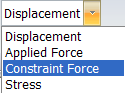

Linear static analysis
When to use linear static analysis
Use linear static analysis to calculate displacements, strains, stresses, and reaction forces under the effect of applied loads.
Linear static analysis assumes that all loads are applied slowly and gradually until they reach their full magnitudes. After reaching their full magnitudes, loads remain constant (time-invariant). Time-variant loads that induce considerable inertial or damping forces may warrant dynamic analysis.
You can calculate the structural response of bodies spinning with constant velocities or traveling with constant accelerations, since the generated loads do not change with time.
-
To apply linear static analysis, choose the Linear Static study type in the Create Study dialog box.
-
Linear static analysis is the most commonly used analysis. To learn how to define linear static studies for different types of models, you can choose one from the list of tutorials here: Practice creating and using studies.
Concepts of linear static analysis
Linear static analysis represents the most basic type of analysis. The term linear means that the computed response—displacement or stress, for example—is linearly related to the applied force. The term static means that the forces do not vary with time—or, that the time variation is insignificant and can therefore be safely ignored.
An example of a static force is a building's dead load, which is comprised of the building's weight plus the weight of offices, equipment, and furniture. This dead load is often expressed in terms of lb/sq ft or N/sq m. Such loads are often defined using a maximum expected load with some factor of safety applied.
In addition to the time-invariant dead load described above, another example of a static load is an enforced displacement. For example, in a building part of the foundation may settle somewhat, inducing static loads. Another example of a static load is a steady-state temperature field. The applied temperatures cause thermal expansion which, in turn, causes induced forces.
The solver uses the displacement method, where the equations of motion are written with displacements as the unknown. Once the displacements are computed, they are used to compute element forces, stresses, reaction forces, and strains.
